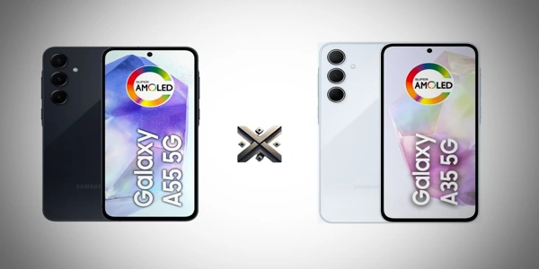

Os modelos da linha Galaxy A da Samsung estão entre os mais populares do mercado, oferecendo um equilíbrio entre desempenho, design moderno e preço acessível. Em 2024, dois modelos se destacam: o Galaxy A55 e o Galaxy A35.
Mas qual deles é a melhor escolha? Neste comparativo detalhado, analisamos os principais aspectos desses smartphones para ajudar você a tomar a decisão certa.

O Galaxy A55 traz um acabamento premium em vidro, proporcionando uma sensação mais sofisticada e durável, enquanto o Galaxy A35 utiliza um corpo em plástico, tornando-o mais leve, mas menos refinado visualmente. O A55 também possui um design com bordas metálicas, conferindo um toque mais premium.
Ambos os dispositivos contam com certificação IP67, garantindo resistência à água e poeira, permitindo submersão em até 1 metro de profundidade por 30 minutos. Isso adiciona uma camada extra de proteção contra acidentes do dia a dia. Além disso, o A55 tem um peso ligeiramente maior devido ao uso de materiais mais robustos, enquanto o A35 é mais ergonômico e fácil de segurar por longos períodos.
Os dois modelos estão disponíveis em diversas cores vibrantes, proporcionando opções para diferentes estilos e preferências. No entanto, o vidro traseiro do A55 pode ser mais propenso a marcas de dedo, enquanto o plástico do A35 oferece maior resistência a quedas e impactos.
O Galaxy A55 e o A35 possuem telas Super AMOLED de 6,6 polegadas com resolução Full HD+ (1080 x 2340 pixels) e taxa de atualização de 120 Hz. Isso significa que ambos oferecem imagens vibrantes, alto nível de contraste e uma experiência fluida ao rolar páginas e jogar.
No entanto, o A55 se destaca pelo seu brilho máximo mais alto, alcançando até 1300 nits, enquanto o A35 chega a cerca de 1000 nits. Essa diferença torna o A55 mais legível sob luz solar intensa, ideal para quem usa o celular ao ar livre com frequência.
Além disso, o A55 conta com a tecnologia Vision Booster, que ajusta automaticamente a calibração de cores e brilho para otimizar a visibilidade em diferentes condições de iluminação. Ambos os modelos possuem suporte ao Always-On Display, permitindo visualizar notificações e a hora sem precisar ativar a tela.
O Galaxy A55 vem equipado com o processador Exynos 1480, enquanto o Galaxy A35 utiliza o Exynos 1380. Na prática, isso resulta em um desempenho superior para o A55, especialmente em multitarefas e jogos mais exigentes. O A55 também conta com uma GPU Xclipse 530, que melhora a renderização gráfica em comparação com a Mali-G68 presente no A35.
Em termos de memória, o A55 oferece opções de 8GB ou 12GB de RAM, enquanto o A35 possui versões de 6GB ou 8GB. Ambos contam com armazenamento interno de 128GB ou 256GB, expansível via cartão microSD de até 1TB. Para usuários que utilizam muitos aplicativos simultaneamente ou jogam games pesados, o A55 se mostra uma opção mais poderosa.
Outro diferencial do A55 é seu sistema de resfriamento mais eficiente, permitindo sessões prolongadas de uso intenso sem aquecimento excessivo. Isso garante um desempenho mais estável ao longo do tempo, reduzindo eventuais engasgos em tarefas exigentes.
Os dois smartphones contam com um conjunto triplo de câmeras traseiras, mas há diferenças significativas entre elas. O Galaxy A55 possui os seguintes sensores:
Já o Galaxy A35 conta com:
A estabilização óptica (OIS) está presente em ambos, mas o A55 conta com um pós-processamento de imagem mais eficiente, resultando em melhores fotos em baixa luz. O sensor ultra-wide do A55 também captura imagens com mais detalhes e cores mais equilibradas em comparação ao A35.
Ambos contam com câmera frontal de 32 MP (f/2.2), entregando selfies de ótima qualidade. Além disso, ambos gravam vídeos em 4K a 30fps, mas o A55 possui uma estabilização eletrônica mais aprimorada para vídeos menos tremidos.
Os dois modelos possuem bateria de 5.000 mAh, garantindo excelente autonomia. Com uso moderado, ambos podem durar até dois dias sem precisar de recarga. No entanto, o A55 se beneficia de uma melhor eficiência energética devido ao seu processador otimizado.
O carregamento rápido de 25W está presente em ambos os dispositivos, permitindo recargas de 0% a 50% em aproximadamente 30 minutos. No entanto, nenhum dos modelos acompanha carregador na caixa, exigindo a compra separada.
Outro diferencial do A55 é a presença de otimizações no software para economia de bateria, garantindo maior autonomia mesmo em tarefas exigentes. Para usuários que precisam de um celular com excelente duração de bateria, ambos os modelos são ótimas opções.
O Galaxy A55 e o A35 rodam a interface One UI 6 baseada no Android 14. Ambos contam com suporte para até quatro anos de atualizações do sistema operacional e cinco anos de atualizações de segurança, garantindo longevidade e proteção contra ameaças cibernéticas.
O One UI 6 traz diversas melhorias, como personalização avançada, modo noturno aprimorado e melhor integração com dispositivos Samsung. Além disso, o A55 recebe algumas otimizações extras, como funções de inteligência artificial para otimizar o desempenho e consumo de energia.
O Galaxy A55 tem um preço inicial mais alto devido ao seu hardware mais avançado, enquanto o A35 é uma opção mais acessível para quem busca um celular intermediário equilibrado. A diferença de preço pode ser significativa, variando conforme promoções e região.
Atualmente, o Galaxy A35 5G pode ser encontrado por valores a partir de R$ 1.394,10 na versão de 128GB de armazenamento e 6GB de RAM..
O Galaxy A55 5G, Atualmente o seu valor médio é de aproximadamente R$ 1.664,10, dependendo da loja e da versão de armazenamento.
Para quem valoriza desempenho, qualidade de construção e câmeras superiores, o A55 é a melhor escolha. Já o A35 é uma opção ideal para quem quer um smartphone competente sem gastar tanto.
Se você busca um smartphone mais poderoso, com melhor câmera e tela superior, o Galaxy A55 é a melhor opção. No entanto, se deseja um celular equilibrado e com ótimo custo-benefício, o Galaxy A35 ainda entrega um desempenho sólido para a maioria dos usuários.